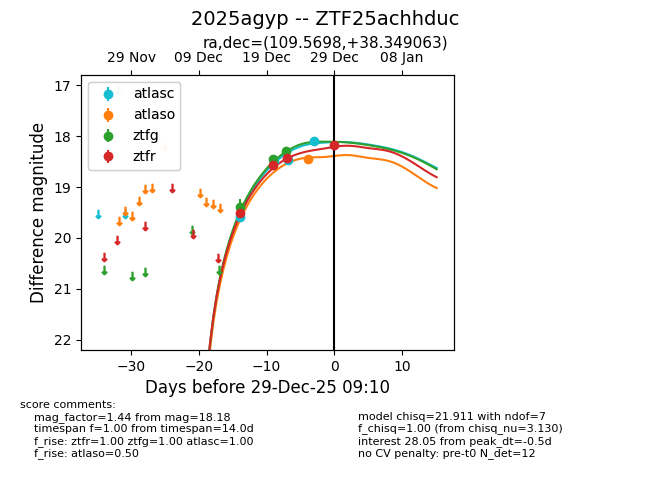
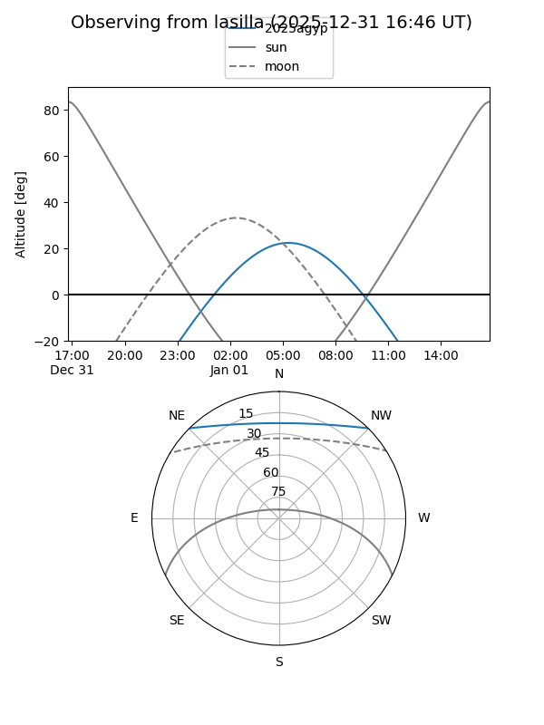
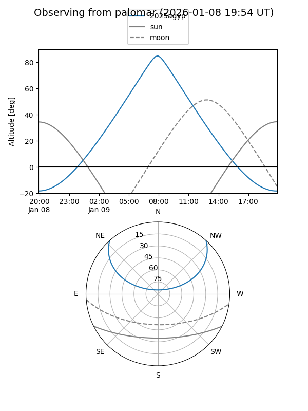
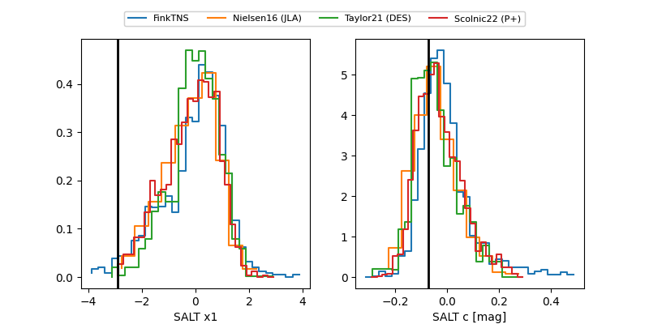

2025agyp
Target 2025agyp at 2025-12-22 18:36
Aliases and brokers:
FINK: fink-portal.org/ZTF25achhduc
Lasair: lasair-ztf.lsst.ac.uk/objects/ZTF25achhduc
ALeRCE: alerce.online/object/ZTF25achhduc
TNS: wis-tns.org/object/2025agyp
YSE: ziggy.ucolick.org/yse/transient_detail/2025agyp
alt names
ZTF25achhduc (ztf,fink_ztf)
2025agyp (tns,yse)
Coordinates:
equatorial (ra, dec) = 109.5698,+38.34906
equatorial (HMS+DMS) = 07:18:16.76,+38:20:56.63
galactic (l, b) = (179.6945,+21.37517)
Flags:
Photometry:
last atlasc=18.48, ztfg=18.29, ztfr=18.42
2 atlasc, 3 ztfg, 3 ztfr detections
Lightcurve

Visibility


Additional plots
